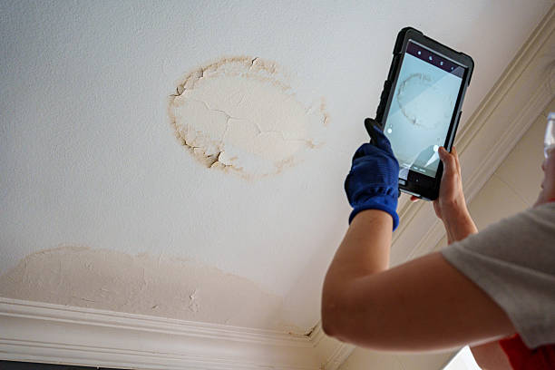

Roofing support that respects the pace of the business.
Commercial roofing in Jersey City often means balancing access, timing, operations, and long-term performance at the same time. We approach these projects with stronger structure so the work can move without creating unnecessary disruption.

Office and retail buildings
Service for properties where appearance, water management, and daily access all matter.
Warehouse and industrial sites
Roofing work planned around larger footprints, durability needs, and tighter logistics.
Mixed-use properties
Coordination for buildings where residential and commercial needs overlap in one place.

Why commercial work feels different
The roof is part of a larger operating environment.
Commercial projects usually involve more moving parts than a single-family home. Access points, business hours, tenant expectations, property management needs, and material scheduling all affect how the roofing plan should be built.
Organized staging
Work sequencing matters when people are still using the building.
Durability focus
Commercial roofs have to stand up to more than weather alone.
Project priorities
What commercial property owners usually care about most.
Leak prevention
Control damage before operations or interiors are affected.
Scheduling
Keep the work moving without creating avoidable disruption.
Roof life planning
Understand what repairs buy you and when replacement makes more sense.
Clear updates
Property teams need communication that stays useful and concise.

Planning a commercial roofing project in Jersey City?
We can help you sort through roof condition, timing, property needs, and the smartest way to move the work forward.
Request a Commercial Estimate